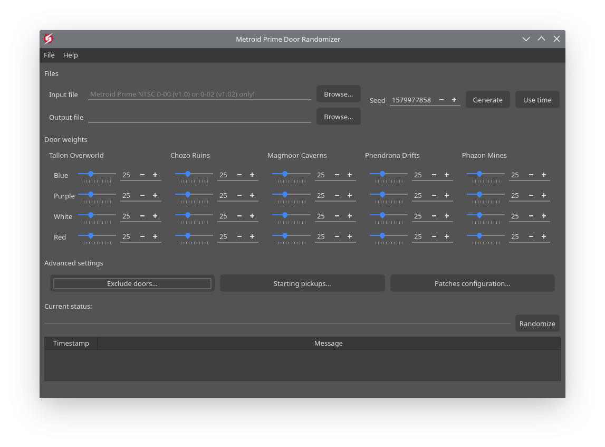

User Interface

Main window of MPDR
Metroid Prime Door Randomizer is divided in multiple sections. How to use them is covered in the Configuring MPDR chapter.
- Files: They take where is the Metroid Prime disc to patch, and where the patched file should be saved.
- Seed: Where the seed can be changed.
- Door weights: Where the door weight settings can be modified.
- Advanced settings: These buttons open more advanced customization options for MPDR. These open windows that contain more options.
- Stauts: The status section displays information on the patching process of the game. It also contains the Randomize button to run the patcher.
There is also a menu at the top of the window.
- File... This menu covers operations with presets.
- Help... This menu covers help related stuff.